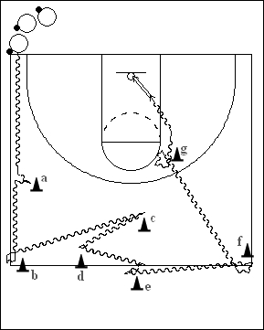

Catégorie : DRIBBLE (Dr-014)
Déroulement
- Tous les joueurs possèdent un ballon à un coin du terrain.
- Chaque joueur effectue le trajet suivant : dribble main droite jusqu’au cône a, inside out dribble et poursuite dribble main droite jusqu’au cône b; changement de direction en reverse et dribble main gauche jusqu’au cône c; back dribble (toujours main gauche) jusqu’au cône d; dribble rapide main droite vers l’avant jusqu’au cône e; fake reverse et poursuite du dribble main droite jusqu’au cône f; nouveau reverse et dribble main gauche jusqu’au cône g; un dernier changement de direction (between the legs ou behind the back) et terminer par un lay-up main droite.
- Rebond et retour dans la file de départ.
Coaching points
- Travailler avec départ alterné à droite puis à gauche.
- Insister sur le changement de rythme qui doit accompagner chaque changement de direction.